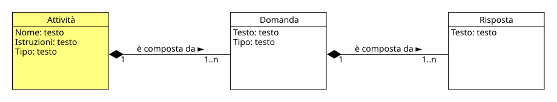

Attività
Permessi e Ruoli
- Gestisce (crea, modifica, elimina): Progettista
- Visualizza: Progettista, Moderatore, Testato, Esperto
Nel progetto concettuale un'attività ha diversi attributi che la identificano:
- Nome rappresenta il nome dell'attività, che deve essere univoco all'interno del progetto
- Istruzioni rappresentano le istruzioni che il testato deve seguire per completare l'attività
- Tipo rappresenta la tipologia di appartenenza dell'attività (es. Riconoscere un modello tipico, Stile cognitivo ecc.)
Essa è costituita da una o più domande a loro volta costituite da una o più risposte secondo il seguente schema:

Importante
Un'attività ha un rapporto di composizione Composizione
In UML è una relazione strutturale di tipo "tutto-parte" molto forte, in cui la classe contenitore possiede e controlla totalmente il ciclo di vita degli oggetti contenuti.
con le domande, questo significa che se essa viene eliminata, anche tutte le domande di cui è composta verrano eliminate.
Esempio
Nome: Questionario sulle teorie dell'intelligenza
Tipo: Stile cognitivo
Istruzioni: Leggi ogni frase riportata qui sotto e poi fai una crocetta solo nel quadratino che indica quanto sei d'accordo con l'affermazione.
Domanda 1: La tua intelligenza è qualcosa di te che non puoi cambiare.
Risposte:
- 1a. D'accordo
- 1b. Un po' d'accordo
- 1c. Un po' contrario
- 1d. Contrario
Domanda 2: Puoi imparare cose nuove, ma non puoi cambiare la tua intelligenza.
Risposte:
- 2a. D'accordo
- 2b. Un po' d'accordo
- 2c. Un po' contrario
- 2d. Contrario
Moodle
In Moodle, non esiste un concetto di Attività nella quale è possibile inserire una o più domande, tuttavia è possibile avere una rappresentazione molto simile attraverso le Categorie gestibili nel deposito delle domande, che permettono di raggruppare serie di domande.
Il meccanismo è molto semplice, il Progettista per ogni attività che ha definito nel progetto, crea una categoria nel deposito delle domande e all'interno di questa categoria inserisce tutte le domande che fanno parte dell'attività stessa.
Creare una nuova attività
Per creare una nuova attività è importante che l'utente sia all'interno di un deposito delle domande esistente. A questo punto i passi sono:
- Nel menù a tendina in alto a sinistra scegliere Categorie
-
Cliccare sul pulsante Aggiungi categoria e compilare i campi:
- Categoria genitore rappresenta a quale categoria si vuole inserire l'attività
- Nome rappresenta il nome della nuova categoria
- Informazioni categoria (opzionale) rappresenta la descrizione della nuova attività
Tip
Per una migliore organizzazione delle attività si consiglia di creare una categoria padre contenente tutte le attività concettualmente simili (stesso tipo) e al suo interno sotto-categorie per ogni attività, in questo modo sarà più semplice la loro ricerca.
Esempio
-
Considerando che Moodle dispone già di un deposito a livello di sistema, si può creare una nuova attività in questo modo:
- Categoria genitore: Primo livello di sistema
- Nome: Stile cognitivo
- Informazioni categoria (opzionale): La seguente categoria contiene tutte le attività che contengono domande relative allo stile cognitivo.
-
Successivamente, all'interno dell'attività appena creata, il Progettista potrà creare nuove sotto-categorie per ogni attività specifica, ad esempio:
- Categoria genitore: Stile cognitivo
- Nome: Questionario sulle teorie dell'intelligenza
- Informazioni categoria (opzionale): La seguente categoria contiene tutte le domande relative al questionario sulle teorie dell'intelligenza.
-
In questa nuova sotto-categoria appena creata, il Progettista inserirà tutte le domande che fanno parte dell'attività.
Modificare un'attività
Per modificare un'attività è importante che l'utente sia all'interno del deposito delle domande.
- Nel menù a tendina in alto a sinistra scegliere Categorie
- Scorrere la lista delle attività fino a trovare quella che si vuole modificare e premere il menù a tre puntini
- All'interno del menù selezionare Impostazioni e modificare i campi desiderati.
Eliminare un'attività
Per eliminare un'attività è importante che l'utente sia all'interno del deposito delle domande.
- Nel menù a tendina in alto a sinistra scegliere Categorie
- Scorrere la lista delle attività fino a trovare quella che si vuole eliminare e premere il menù a tre puntini
- All'interno del menù selezionare Elimina e confermare l'eliminazione dell'attività.